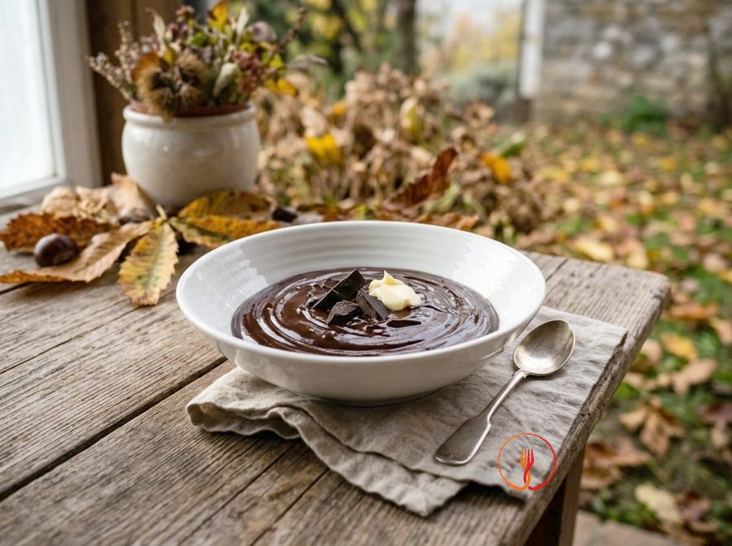

Chocolate ganache
Ingredients
- dark chocolate200 g
- fresh cream200 ml
- butter (optional)20 g
Allergens
Milk, Soy
May contain traces of: Tree nuts.
Method
- Finely chop the dark chocolate and transfer it to a heat-resistant bowl.
- Pour the cream into a small saucepan and heat it until it almost reaches a boil.
- Pour the hot cream over the chopped chocolate and let it rest for about a minute.
- Stir slowly starting from the center and progressively widening the movement towards the edges.
- When the chocolate is completely melted, add the softened butter and mix until you obtain a glossy cream.
- Let it cool at room temperature, stirring occasionally to maintain a uniform consistency.
- For a coating ganache, use it while still fluid; for a firmer filling, let it cool further.
- If you want a whipped consistency, let the ganache cool completely in the refrigerator and whip it briefly with a whisk.
Chef's tips
Tips, errors and alternatives:
- Do not pour boiling cream over the chocolate: excessive temperature can compromise the emulsion.
- If the ganache separates, try to emulsify it with an immersion blender.
- For a sweeter version use milk chocolate, reducing the cream according to the desired consistency.
- You can add coffee, vanilla or orange zest.
Nutrition facts (estimate)
| Per serving (210 g) | Per 100 g | |
|---|---|---|
| Energy | 4025 kJ / 962 kcal | 1916 kJ / 458 kcal |
| Protein | 9.3 g | 4.4 g |
| Carbohydrates | 38 g | 18 g |
| of which sugars | 28 g | 14 g |
| Fat | 83 g | 40 g |
| of which saturates | 51 g | 24 g |
| Fibre | 10 g | 4.8 g |
| Salt | 0.1 g | 0.1 g |
AI estimates based on average CREA / USDA data: indicative only, not a substitute for medical or dietitian advice.
Open the recipe in the app for the shopping list, ingredient sheets and nearby shops.